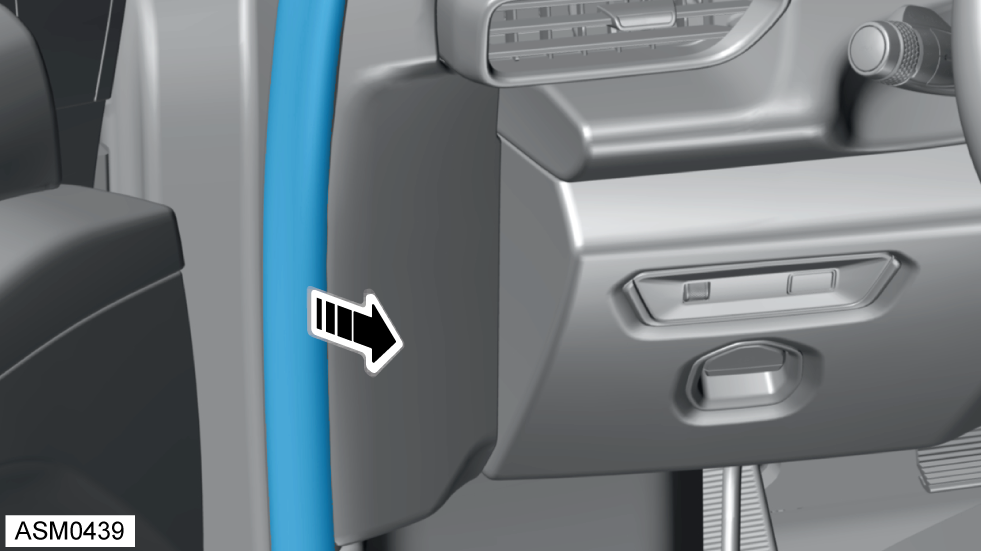
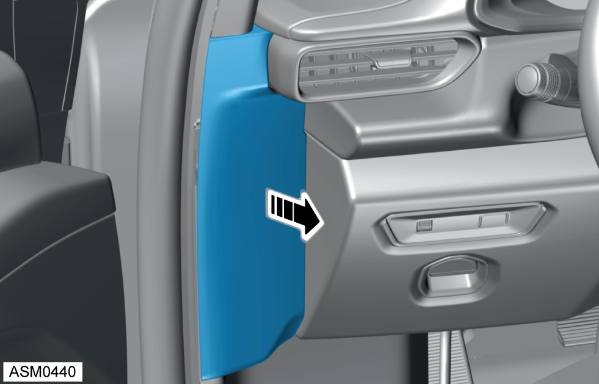
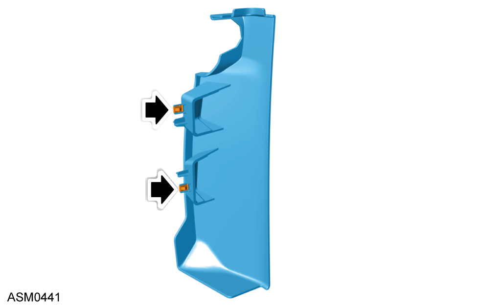

Finisher - Fascia End - Left Side
Print
Operation Code: 14.05.09-02
Removal

Partially pull back door seal to access finisher.

Release finisher from lower edge to disengage clips (x2).

Refer to illustration for clip type and location.
CAUTION: Top edge of finisher hooks under fascia top panel.
Remove finisher from vehicle.
Installation
Installation is the reverse of removal procedure.
 CAUTION: Top edge of finisher hooks under fascia top panel.CAUTION: Top edge of finisher hooks under fascia top panel.
CAUTION: Top edge of finisher hooks under fascia top panel.CAUTION: Top edge of finisher hooks under fascia top panel.